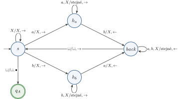
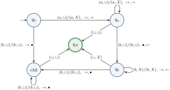

1.7 Úlohy navíc¶
Úlohy procvičují práci s Turingovým strojem: stopování výpočtu, návrh jednopáskových a dvoupáskových strojů s odhadem počtu kroků, kódování stroje a cenu simulace více pásek na jedné. Opírají se o oddíly 1.4, 1.3, 1.5 a o cvičení 1.6.
Neoficiální úlohy
Úlohy v tomto oddílu nejsou oficiální zadání předmětu. Jsou to procvičovací úlohy navíc k látce kapitoly; každý stroj z řešení byl naprogramován a odsimulován na všech vstupech do délky 14 (unární vstupy do délky 2099), výsledky byly porovnány s definicí jazyka a všechny počty kroků, dotazů a délky kódů spočítal program.
Ve všech úlohách platí konvence skript: páska je oboustranně nekonečná, na začátku je vstup na pásce 1 obklopený symboly \(\blank\), ostatní pásky jsou prázdné a všechny hlavy stojí na první buňce vstupu. Nevykreslené přechody vedou do \(\qR\).
1.7.1 Rozcvička¶
Úloha 1.1 (stopování stroje)
Jednopáskový stroj \(M\) má vstupní abecedu \(\Sigma=\{1\}\), abecedu pásky \(\{1,X,Y,\blank\}\), počáteční stav \(q_0\) a koncový stav \(\qhalt\). Přechodová funkce (položka \((q',s',D)\) znamená „přejdi do \(q'\), zapiš \(s'\), posuň hlavu ve směru \(D\)“; pomlčka = situace, která nenastane):
| stav | \(1\) | \(X\) | \(Y\) | \(\blank\) |
|---|---|---|---|---|
| \(q_0\) | \((q_1,X,\Rgt)\) | – | \((q_3,1,\Rgt)\) | \((\qhalt,\blank,\Stay)\) |
| \(q_1\) | \((q_1,1,\Rgt)\) | – | \((q_1,Y,\Rgt)\) | \((q_2,Y,\Lft)\) |
| \(q_2\) | \((q_2,1,\Lft)\) | \((q_0,X,\Rgt)\) | \((q_2,Y,\Lft)\) | – |
| \(q_3\) | – | – | \((q_3,1,\Rgt)\) | \((q_4,\blank,\Lft)\) |
| \(q_4\) | \((q_4,1,\Lft)\) | \((q_4,1,\Lft)\) | – | \((\qhalt,\blank,\Rgt)\) |
- Vypište všechny konfigurace výpočtu na vstupu \(11\).
- Jakou funkci \(f_M\) stroj počítá (definice 1.7)? Dokažte to.
- Kolik přesně kroků udělá na vstupu \(1^n\)? Jaká je to časová složitost?
Řešení
a) Konfigurace. Páska od buňky před vstupem, podtržený symbol je pod hlavou.
| krok | stav | páska | krok | stav | páska |
|---|---|---|---|---|---|
| 0 | \(q_0\) | \(\blank\,\underline{1}\,1\,\blank\,\blank\,\blank\) | 10 | \(q_0\) | \(\blank\,X\,X\,\underline{Y}\,Y\,\blank\) |
| 1 | \(q_1\) | \(\blank\,X\,\underline{1}\,\blank\,\blank\,\blank\) | 11 | \(q_3\) | \(\blank\,X\,X\,1\,\underline{Y}\,\blank\) |
| 2 | \(q_1\) | \(\blank\,X\,1\,\underline{\blank}\,\blank\,\blank\) | 12 | \(q_3\) | \(\blank\,X\,X\,1\,1\,\underline{\blank}\) |
| 3 | \(q_2\) | \(\blank\,X\,\underline{1}\,Y\,\blank\,\blank\) | 13 | \(q_4\) | \(\blank\,X\,X\,1\,\underline{1}\,\blank\) |
| 4 | \(q_2\) | \(\blank\,\underline{X}\,1\,Y\,\blank\,\blank\) | 14 | \(q_4\) | \(\blank\,X\,X\,\underline{1}\,1\,\blank\) |
| 5 | \(q_0\) | \(\blank\,X\,\underline{1}\,Y\,\blank\,\blank\) | 15 | \(q_4\) | \(\blank\,X\,\underline{X}\,1\,1\,\blank\) |
| 6 | \(q_1\) | \(\blank\,X\,X\,\underline{Y}\,\blank\,\blank\) | 16 | \(q_4\) | \(\blank\,\underline{X}\,1\,1\,1\,\blank\) |
| 7 | \(q_1\) | \(\blank\,X\,X\,Y\,\underline{\blank}\,\blank\) | 17 | \(q_4\) | \(\underline{\blank}\,1\,1\,1\,1\,\blank\) |
| 8 | \(q_2\) | \(\blank\,X\,X\,\underline{Y}\,Y\,\blank\) | 18 | \(\qhalt\) | \(\blank\,\underline{1}\,1\,1\,1\,\blank\) |
| 9 | \(q_2\) | \(\blank\,X\,\underline{X}\,Y\,Y\,\blank\) |

Snímky pásky z tabulky na začátku každého kola a na konci. Všimni si: \(X\) označuje už zpracovanou původní jedničku a \(Y\) nově připsanou; obojí se na konci přepíše zpět na \(1\).
b) Funkce. \(f_M(1^n)=1^{2n}\). Invariant: na začátku \(i\)-tého kola (\(i=1,\dots,n\)) je stroj v \(q_0\), na pásce je \(X^{i-1}\,1^{n-i+1}\,Y^{i-1}\) a hlava stojí na první \(1\). Platí pro \(i=1\) (vstup \(1^n\)). V kole \(q_0\) přepíše tuto \(1\) na \(X\), \(q_1\) přejede zbylé jedničky a symboly \(Y\) doprava a na první \(\blank\) zapíše nové \(Y\), \(q_2\) se vrátí doleva k nejpravějšímu \(X\) a posune se o buňku doprava. Na pásce je pak \(X^{i}\,1^{n-i}\,Y^{i}\) a hlava stojí na první \(1\) (pro \(i=n\) na prvním \(Y\)) – invariant pro kolo \(i+1\). Po \(n\) kolech čte \(q_0\) symbol \(Y\) a pásku tvoří \(X^nY^n\). Pak \(q_3\) přepíše všechna \(Y\) na \(1\), \(q_4\) jde doleva a přepíše všechna \(X\) na \(1\); na \(\blank\) před slovem udělá krok doprava a zastaví. Na pásce zůstane \(1^{2n}\) a hlava stojí na jeho prvním symbolu. Pro \(n=0\) čte \(q_0\) hned \(\blank\) a zastaví s prázdnou páskou, \(f_M(\varepsilon)=\varepsilon=1^{0}\).
c) Počet kroků. Kolo \(i\): přepis na \(X\) (1 krok), \(q_1\) přejede \(n-1\) buněk (zbylých \(n-i\) jedniček a \(i-1\) symbolů \(Y\)) a zapíše \(Y\) (\(n-1+1\) kroků), \(q_2\) přejede doleva \(n-1\) buněk a na \(X\) udělá krok doprava (\(n-1+1\) kroků). Kolo stojí \(2n+1\) kroků, všech \(n\) kol \(n(2n+1)\). Závěr: \(q_0\) na \(Y\) (1 krok), \(q_3\) přes zbylých \(n-1\) symbolů \(Y\) a na \(\blank\) (\(n\) kroků), \(q_4\) přes \(2n\) buněk a na \(\blank\) (\(2n+1\) kroků), celkem \(3n+2\). Dohromady
pro \(n=0\) jeden krok. Na vstupu \(11\) je to \(2\cdot 3^2=18\) kroků, jak ukazuje tabulka. Časová složitost je \(\Theta(n^2)\) (vzhledem k délce vstupu \(n\)).
Úloha 1.2 (rozhodovací verze a velikost instance)
Uvažujte tři optimalizační problémy.
- \(\prob{MaxCut}\): pro graf \(G=(V,E)\) najdi rozdělení \(V\) na dvě části s co nejvíce hranami mezi nimi.
- \(\prob{Bin Packing}\): pro velikosti předmětů \(s_1,\dots,s_n\in\N\) a kapacitu koše \(C\) najdi nejmenší počet košů, do kterých se předměty vejdou.
- \(\prob{Nejdelší cesta}\): pro graf \(G\), váhy \(w\colon E\to\N\) a vrcholy \(s,t\) najdi jednoduchou cestu z \(s\) do \(t\) s největším součtem vah.
- Napište rozhodovací verzi každého z nich (vstup a otázka).
- Ukažte, že rozhodovací verze není těžší než výpočet hodnoty optima.
- Instance \(\prob{Nejdelší cesty}\) má \(|V|=30\), \(|E|=60\) a váhy z \(\{0,\dots,1000\}\). Kolik dotazů na rozhodovací „API“ stačí k nalezení hodnoty optima? Kolik bitů zaberou váhy v binárním zápisu a kolik symbolů v unárním?
- Kolega navrhuje ptát se postupně pro \(k=0,1,2,\dots\), dokud API neodpoví \(\NE\). Kolik dotazů to může být, jsou-li váhy zapsané binárně na \(b\) bitech? Je to polynomiální v délce vstupu? A při unárním zápisu?
Řešení
a) Rozhodovací verze (recept z oddílu 1.3: přidat práh \(k\) a ptát se na existenci):
- \(\prob{MaxCut}\): vstup \((G,k)\); existuje \(S\subseteq V\) takové, že mezi \(S\) a \(V\setminus S\) vede alespoň \(k\) hran?
- \(\prob{Bin Packing}\): vstup \((s_1,\dots,s_n,C,k)\); lze předměty rozdělit do nejvýše \(k\) košů tak, aby součet velikostí v každém koši byl nejvýše \(C\)?
- \(\prob{Nejdelší cesta}\): vstup \((G,w,s,t,k)\); existuje jednoduchá cesta z \(s\) do \(t\) s vahou alespoň \(k\)?
Směr nerovnosti se řídí cílem: u maximalizace „alespoň \(k\)“, u minimalizace „nejvýše \(k\)“. Opačný směr dá nezajímavý problém – například „existuje řez s nejvýše \(k\) hranami?“ má vždy odpověď \(\ANO\) (\(S=\emptyset\)).
b) Rozhodovací verze z optima. Umíme-li spočítat hodnotu optima \(\mathrm{OPT}\), odpovíme na rozhodovací otázku jedním výpočtem a jedním porovnáním čísel: u maximalizace \(\ANO\), právě když \(\mathrm{OPT}\ge k\), u minimalizace \(\ANO\), právě když \(\mathrm{OPT}\le k\) (u \(\prob{Nejdelší cesty}\) navíc: nevede-li z \(s\) do \(t\) žádná cesta, optimum neexistuje a odpověď je \(\NE\)). Porovnání dvou binárně zapsaných čísel trvá polynomiálně dlouho. Opačný směr je důsledek 1.4.
c) Binární vyhledávání. Jednoduchá cesta projde každý vrchol nejvýše jednou, má tedy nejvýše \(29\) hran a váhu nejvýše \(\mathrm{MAX}=29\cdot1000=29\,000\). Jeden dotaz s \(k=0\) zjistí, zda cesta z \(s\) do \(t\) vůbec existuje. Pokud ano, leží optimum v \(\{0,\dots,29\,000\}\); udržujeme interval \([lo,hi]\), který optimum obsahuje, ptáme se na \(k=\lceil(lo+hi)/2\rceil\) a při \(\ANO\) položíme \(lo=k\), při \(\NE\) \(hi=k-1\). Každý dotaz interval zhruba rozpůlí, takže stačí \(\lceil\log_2 29\,001\rceil=15\) dotazů (\(2^{14}=16\,384<29\,001\le 2^{15}\)), s úvodním dotazem nejvýše 16.
Velikost instance. Váha nejvýše \(1000<2^{10}\) zabere binárně 10 bitů, všech 60 vah tedy 600 bitů. Hrany jako dvojice čísel vrcholů po 5 bitech (\(30\le 2^5\)) dají dalších 600 bitů; celkem asi 1200 bitů (plus \(s\), \(t\), \(k\) a oddělovače). Unárně (\(w\mapsto 1^{w}\)) zaberou samotné váhy až \(60\cdot1000=60\,000\) symbolů.
d) Lineární hledání. Při vahách na \(b\) bitech je \(\mathrm{MAX}=29\cdot(2^b-1)\). Je-li optimum rovno \(\mathrm{MAX}\), dostane kolega odpověď \(\ANO\) pro \(k=0,1,\dots,\mathrm{MAX}\) a \(\NE\) až pro \(k=\mathrm{MAX}+1\), potřebuje tedy až \(\mathrm{MAX}+2\approx 29\cdot 2^b\) dotazů. Délka vstupu je ale jen řádově \(60\,b\) bitů, takže počet dotazů je exponenciální v délce vstupu. Pro \(b=20\): vstup asi 1800 bitů, binární vyhledávání \(25\) dotazů (s úvodním dotazem \(k=0\) nejvýše 26), lineární až \(30\,408\,677\) dotazů. Binární vyhledávání potřebuje \(\lceil\log_2(\mathrm{MAX}+1)\rceil+1\le b+6\) dotazů, což je méně než délka vstupu.
Při unárním zápisu je váha každé cesty nejvýše součet všech vah a ten je nejvýše délka vstupu \(N\). Lineární hledání pak potřebuje nejvýše \(N+2\) dotazů a je polynomiální v délce vstupu – ale jen proto, že unární zápis vstup exponenciálně nafoukl (poznámka „Na kódování (skoro) nezáleží“ v oddílu 1.2). Proto se čísla měří vždy v binárním zápisu.
Úloha 1.3 (kódování stroje)
Konkrétní kódování \(\enc{M}\) je (nad rámec přednášky); přednáška říká jen, že nějaké existuje. Jednopáskový stroj má stavy \(q_1,\dots,q_r\), kde \(q_1\) je počáteční, \(q_2=\qA\) (u stroje počítajícího funkci \(\qhalt\)) a \(q_3=\qR\), symboly pásky \(s_1=0\), \(s_2=1\), \(s_3=\blank\) a směry \(D_1=\Lft\), \(D_2=\Stay\), \(D_3=\Rgt\). Přechod \(\delta(q_i,s_j)=(q_k,s_l,D_m)\) zakódujeme jako
a \(\enc{M}\) jsou kódy všech přechodů v libovolném pořadí oddělené dvojicí \(11\).
- Zakódujte stroj \(M\) s přechody \(\delta(q_1,0)=(q_1,0,\Rgt)\), \(\delta(q_1,1)=(\qA,1,\Stay)\), \(\delta(q_1,\blank)=(\qR,\blank,\Stay)\). Jaký jazyk \(M\) rozhoduje?
- Dekódujte stroj \(N\) s kódem \(\enc{N}=c_1\,11\,c_2\,11\,c_3\,11\,c_4\,11\,c_5\,11\,c_6\), kde \(c_1=\mathtt{010101001000}\), \(c_2=\mathtt{010010101000}\), \(c_3=\mathtt{0100010000100010}\), \(c_4=\mathtt{000010100001010}\), \(c_5=\mathtt{00001001000010010}\), \(c_6=\mathtt{0000100010010001000}\). Co stroj \(N\) počítá a kolik kroků udělá na vstupu délky \(n\)?
- Odhadněte délku \(\enc{M}\) pro stroj s \(r\) stavy a \(g\) symboly pásky. Proč pro pevný stroj stojí univerzálnímu stroji nalezení správného přechodu jen konstantu?
- Je každý binární řetězec kódem nějakého stroje? Má každý stroj jediný kód?
Řešení
a) Po přechodech (v pořadí \(i,j,k,l,m\)):
- \(\delta(q_1,s_1)=(q_1,s_1,D_3)\): \(\mathtt{0\,1\,0\,1\,0\,1\,0\,1\,000}\),
- \(\delta(q_1,s_2)=(q_2,s_2,D_2)\): \(\mathtt{0\,1\,00\,1\,00\,1\,00\,1\,00}\),
- \(\delta(q_1,s_3)=(q_3,s_3,D_2)\): \(\mathtt{0\,1\,000\,1\,000\,1\,000\,1\,00}\).
Tedy \(\enc{M}=\mathtt{01010101000}\,11\,\mathtt{0100100100100}\,11\,\mathtt{0100010001000100}\), celkem \(11+2+13+2+16=44\) symbolů. Stroj jde doprava přes nuly; na první jedničce přijme, na \(\blank\) za slovem zamítne. Rozhoduje tedy jazyk slov nad \(\{0,1\}\), která obsahují aspoň jednu jedničku, a udělá nejvýše \(n+1\) kroků.
b) Kód přechodu nikdy neobsahuje \(11\) (bloky nul jsou neprázdné a oddělené jednou jedničkou), takže rozdělení na přechody je jednoznačné. Délky bloků nul:
| kód | \((i,j,k,l,m)\) | přechod |
|---|---|---|
| \(c_1\) | \((1,1,1,2,3)\) | \(\delta(q_1,0)=(q_1,1,\Rgt)\) |
| \(c_2\) | \((1,2,1,1,3)\) | \(\delta(q_1,1)=(q_1,0,\Rgt)\) |
| \(c_3\) | \((1,3,4,3,1)\) | \(\delta(q_1,\blank)=(q_4,\blank,\Lft)\) |
| \(c_4\) | \((4,1,4,1,1)\) | \(\delta(q_4,0)=(q_4,0,\Lft)\) |
| \(c_5\) | \((4,2,4,2,1)\) | \(\delta(q_4,1)=(q_4,1,\Lft)\) |
| \(c_6\) | \((4,3,2,3,3)\) | \(\delta(q_4,\blank)=(q_2,\blank,\Rgt)\) |
Stav \(q_1\) jde doprava a prohodí každý bit (\(0\leftrightarrow1\)), na \(\blank\) za slovem přejde do \(q_4\), který vrátí hlavu na začátek, a stroj skončí v \(q_2\). Počítá tedy funkci „bitová negace“, např. \(f_N(0110)=1001\). Kroků je \((n+1)+(n+1)=2n+2\): \(n\) přepisů a krok na \(\blank\), pak \(n\) kroků doleva a krok z \(\blank\) před slovem doprava.
c) Kód jednoho přechodu má nejvýše \(r+g+r+g+3\) nul a 4 jedničky, tedy nejvýše \(2r+2g+7\) symbolů. Přechodů je nejvýše \(r\cdot g\) (ze stavů \(\qA\), \(\qR\) žádné nevedou, přesně tedy \((r-2)g\)) a každý oddělovač přidá 2 symboly, takže
Pro \(N\) (\(r=4\), \(g=3\)) má jeden přechod nejvýše 21 symbolů; skutečně má \(\enc{N}\) délku 101. Pro pevný stroj jsou \(r\) a \(g\) konstanty, \(\enc{M}\) má konstantní délku a univerzální stroj najde přechod začínající \(0^i\,1\,0^j\,1\) průchodem po \(\enc{M}\) v čase závislém jen na \(|\enc{M}|\), ne na délce dat \(x\) – to je první bod rozboru ceny simulace v oddílu 1.5.
d) Ne. Například \(\mathtt{1}\), \(\mathtt{0101}\) (jen dva bloky nul), \(\mathtt{0101010}\) (jen čtyři bloky) nebo \(\mathtt{01010101000}\,11\,\mathtt{01010101000}\) (dva přechody pro tutéž dvojici \((q_1,0)\), stroj by nebyl deterministický) nejsou kódy žádného DTS. Takové řetězce se berou jako „není zápisem stroje“ (tak s nimi zachází funkce \(\mathrm{UC}\), definice 2.2). Jediný kód stroj také nemá: pořadí přechodů je libovolné, stroj s \(t\) přechody má tedy \(t!\) různých kódů (a další dostaneme přejmenováním stavů \(q_4,q_5,\dots\)).
1.7.2 Na úrovni testu¶
Úloha 1.4 (stejně \(a\) jako \(b\) na jedné pásce)
Sestrojte jednopáskový deterministický TS, který rozhoduje jazyk
kde \(\#_a(w)\) je počet výskytů \(a\) ve \(w\). Uveďte myšlenku, stavový diagram, význam stavů a horní odhad počtu kroků na vstupu délky \(n\).
Řešení
Myšlenka. V každém kole odškrtneme (přepíšeme na \(X\)) první neodškrtnuté písmeno a k němu první neodškrtnuté písmeno opačného druhu a vrátíme se na začátek. Na rozdíl od \(a^nb^n\) (obr. 1.9) se nehlídá pořadí. Kolo odškrtne vždy jedno \(a\) a jedno \(b\), proto rozdíl počtu neodškrtnutých \(a\) a \(b\) zůstává \(\#_a(w)-\#_b(w)\).

Stavový diagram (16 přechodů, \(h_a\) a \(h_b\) na \(\blank\) zamítají). Všimni si: \(X\) může ležet i mezi neodškrtnutými písmeny, proto ho přeskakují všechny stavy.
Význam stavů.
- \(s\) (počáteční):
- hlava je na levém okraji slova; přeskakuje \(X\) a hledá první neodškrtnuté písmeno. Najde-li \(\blank\), jsou všechna písmena odškrtnutá po dvojicích, tedy \(\#_a=\#_b\): přijmi.
- \(h_a\):
- odškrtli jsme \(a\) a hledáme neodškrtnuté \(b\) (přeskakujeme \(a\) a \(X\)). Najde-li \(\blank\), zbylo více \(a\) než \(b\): zamítni.
- \(h_b\):
- symetricky – hledá \(a\) k odškrtnutému \(b\).
- \(\mathit{back}\):
- dvojice je odškrtnutá; jde doleva na \(\blank\) před slovem a krokem doprava se vrátí do \(s\).
Správnost. Invariant na začátku kola: počet neodškrtnutých \(a\) minus počet neodškrtnutých \(b\) je \(\#_a(w)-\#_b(w)\). Je-li \(w\in L\), každé kolo najde k prvnímu písmenu partnera (rozdíl je 0, takže zbývá-li nějaké \(a\), zbývá i \(b\) a naopak) a po \(n/2\) kolech \(s\) přečte jen \(X\) a \(\blank\): přijme. Je-li \(w\notin L\), nemůže \(s\) nikdy narazit na \(\blank\) (rozdíl je nenulový, něco zbývá), a protože každé kolo odškrtne dvě písmena, nastane nejpozději po \(n/2\) kolech situace, kdy \(h_a\) nebo \(h_b\) partnera nenajde: zamítne. Příklad: \(abba\) – kolo 1 odškrtne \(a\), \(b\) (\(XXba\)), kolo 2 odškrtne \(b\), \(a\) (\(XXXX\)), pak \(s\) čte \(\blank\) a přijme. Slovo \(aab\) – kolo 1 dá \(XaX\), v kole 2 \(h_a\) narazí na \(\blank\) a zamítne.
Čas. Úspěšné kolo, jehož partner leží na pozici \(r\le n-1\) (číslováno od 0), stojí \(2r+2\le 2n\) kroků: cesta doprava k partnerovi a zpět k \(\blank\) před slovem a krok doprava. Úspěšných kol je nejvýše \(n/2\), poslední kolo (přijetí či zamítnutí) stojí nejvýše \(n+2\) kroků. Celkem
Simulace na všech slovech do délky 14 dává nejhorší případ \(a^{n/2}b^{n/2}\) s \((3n^2+6n+4)/4\) kroky (pro sudé \(n\)), tedy odhad sedí i řádově. Rychlejší jednopáskový stroj je úloha 1.8 v oddílu 1.7.3.
Úloha 1.5 (různý počet \(a\) a \(b\) na dvou páskách)
- Sestrojte deterministický dvoupáskový TS, který rozhoduje \(L=\{\,a^ib^j \mid i,j\ge0,\ i\neq j\,\}\) v čase \(O(n)\). Uveďte myšlenku, význam stavů a odhad času.
- Proč nestačí vzít správný stroj pro \(\{a^nb^n\}\) a prohodit v něm \(\qA\) a \(\qR\)?
Řešení
a) Myšlenka. Jako v Cvičení 1.2: za každé \(a\) zapíšeme na pásku 2 symbol \(X\) a za každé \(b\) posuneme hlavu 2 o jeden \(X\) doleva. Přijímáme, když jedna strana „dojde“ dřív, a navíc hlídáme tvar \(a^*b^*\).

Stavový diagram; na hranách do \(\qA\) stroj nic nepřepisuje a hlavy stojí. Nevykreslené situace vedou do \(\qR\).
Význam stavů.
- \(q_0\) (počáteční):
- nic nepřečteno. \((a,\blank)\): zapiš \(X\), obě hlavy \(\Rgt\), do \(q_a\). \((b,\blank)\): \(i=0\) a \(j\ge1\), stačí ověřit, že zbytek jsou samá \(b\) – do \(\mathit{chk}\). \((\blank,\blank)\): prázdné slovo, \(i=j=0\), zamítni.
- \(q_a\):
- čteme blok \(a\); na pásce 2 je tolik \(X\), kolik bylo \(a\) (aspoň jedno). \((\blank,\blank)\): \(j=0<i\), přijmi. \((b,\blank)\): hlava 1 stojí, hlava 2 jde na poslední \(X\), do \(q_b\).
- \(q_b\):
- počet dosud přečtených \(b\) = počet \(X\) vpravo od hlavy 2. \((b,X)\): hlavy \(\Rgt\Lft\). \((\blank,X)\): slovo skončilo a \(X\) zbývají, \(j<i\), přijmi. \((\blank,\blank)\): \(j=i\), zamítni. \((b,\blank)\): všech \(i\) symbolů \(X\) je spárováno a přišlo další \(b\), tedy \(j>i\), pokud je tvar v pořádku – do \(\mathit{chk}\). \((a,\cdot)\): \(a\) za \(b\), zamítni.
- \(\mathit{chk}\):
- už víme \(j>i\); hlava 1 jde doprava přes \(b\). \((\blank,\blank)\): přijmi; \(a\): zamítni.
Čas. Hlava 1 se posune doprava v každém kroku kromě jediného přepnutí \(q_a\to q_b\) a posledního kroku, který jen čte. Celkem nejvýše \(n+2\) kroků (simulace na všech slovech do délky 14: maximum je přesně \(n+2\), např. \(aab\)). Každý výpočet zastaví, stroj \(L\) rozhoduje v čase \(O(n)\).
b) Stroj pro \(\{a^nb^n\}\) zamítá i slova, která vůbec nemají tvar \(a^*b^*\), např. \(ba\) nebo \(aba\). Po prohození by je přijal, a ta v \(L\) nejsou. Prohození \(\qA\leftrightarrow\qR\) dá stroj pro doplněk \(\{a,b\}^*\setminus\{a^nb^n\}\), ne pro \(L\); proto potřebujeme stav \(\mathit{chk}\) a zamítání \((a,\cdot)\) v \(q_b\). (Ověřeno: prohozený stroj chybně přijímá právě slova mimo \(a^*b^*\), nejkratší je \(ba\).)
Úloha 1.6 (mocniny dvojky na jedné pásce)
Sestrojte jednopáskový deterministický TS, který rozhoduje jazyk \(L=\{\,0^{2^k}\mid k\ge0\,\}=\{0,00,0000,\dots\}\) nad abecedou \(\{0\}\). Dejte přechodovou funkci, zdůvodněte správnost a ukažte, že stroj udělá \(O(n\log n)\) kroků.
Řešení
Myšlenka. Opakovaně půlíme: v jednom průchodu zleva doprava škrtneme (přepíšeme na \(X\)) každou druhou zbývající nulu, tj. druhou, čtvrtou, šestou… Je-li zbývajících nul lichý počet větší než 1, číslo není mocninou dvojky; zbude-li jediná nula, je. Parita počtu nul se nese ve stavu.
Přechodová funkce (položka \((q',s',D)\)):
| stav | \(0\) | \(X\) | \(\blank\) |
|---|---|---|---|
| \(s\) (v průchodu ještě žádná \(0\)) | \((o_1,0,\Rgt)\) | \((s,X,\Rgt)\) | \(\qR\) |
| \(o_1\) (právě jedna \(0\)) | \((e,X,\Rgt)\) | \((o_1,X,\Rgt)\) | \(\qA\) |
| \(e\) (sudý počet, aspoň 2) | \((o,0,\Rgt)\) | \((e,X,\Rgt)\) | \((\mathit{back},\blank,\Lft)\) |
| \(o\) (lichý počet, aspoň 3) | \((e,X,\Rgt)\) | \((o,X,\Rgt)\) | \(\qR\) |
| \(\mathit{back}\) | \((\mathit{back},0,\Lft)\) | \((\mathit{back},X,\Lft)\) | \((s,\blank,\Rgt)\) |
Nulu, kterou stroj čte ve stavu s lichým počtem (\(o_1\), \(o\)), škrtne – je to druhá, čtvrtá… nula průchodu. Na \(\blank\) v \(s\) je slovo prázdné (\(0^0\) není v \(L\), \(2^k\ge1\)).

Výpočet na \(0^8\): páska na začátku každého průchodu (stav \(s\)). Všimni si: první nula se nikdy neškrtá, takže stroj nepotřebuje značku levého okraje – \(\mathit{back}\) se vrací až na \(\blank\) před slovem.
Správnost. Pro \(m\ge1\) platí: \(m\) je mocnina dvojky, právě když \(m=1\), nebo \(m\) je sudé a \(m/2\) je mocnina dvojky (liché \(m\ge3\) mocninou dvojky není). Průchod začínající s \(m\) nezaškrtnutými nulami skončí na \(\blank\) ve stavu podle \(m\): pro \(m=0\) v \(s\) (jen prázdné slovo), zamítne; pro \(m=1\) v \(o_1\), přijme; pro liché \(m\ge3\) v \(o\), zamítne; pro sudé \(m\ge2\) v \(e\) a škrtnuto bylo přesně \(m/2\) nul a další průchod začne s \(m/2\) nulami. Indukcí podle \(m\) stroj přijme \(0^n\), právě když \(n\) je mocnina dvojky.
Čas. Průchod tam stojí \(n+1\) kroků (přes \(n\) buněk a krok na \(\blank\)), návrat \(n+1\) kroků. Počet nul se v každém pokračujícím průchodu přesně půlí, takže průchodů je nejvýše \(\lfloor\log_2 n\rfloor+1\). Celkem
Simulace pro všechna \(n\le 2099\) odhad potvrzuje (např. \(T(8)=63\le 18\cdot4\)).
1.7.3 Těžší úlohy¶
Úloha 1.7 (simulace \(k\) pásek na jedné)
Nechť \(M\) je \(k\)-páskový DTS, který na každém vstupu délky \(n\) zastaví po nejvýše \(T(n)\) krocích.
- Popište jednopáskový DTS \(S\), který rozhoduje stejný jazyk, a dokažte, že udělá \(O(T(n)^2)\) kroků (odvoďte konkrétní mez).
- Použijte výsledek na dvoupáskový stroj pro palindromy z příkladu 1.6: kolik kroků udělá \(M\) a jakou mez dostaneme pro \(S\)?
- Kolik symbolů má abeceda pásky stroje \(S\) z části b)?
Řešení
a) Abeceda. Páska stroje \(S\) má \(k\) stop (obrázek v oddílu 1.5). Symbol pásky je \(k\)-tice \(((x_1,h_1),\dots,(x_k,h_k))\) s \(x_j\in G\) a \(h_j\in\{0,1\}\): na pásce \(j\) je v této buňce \(x_j\) a \(h_j=1\) (značka), právě když tu stojí hlava \(j\). Původní symbol \(x\in\Sigma\cup\{\blank\}\) čte \(S\) jako \(((x,0),(\blank,0),\dots,(\blank,0))\), takže vstup není třeba přepisovat. Stav stroje \(S\) nese stav stroje \(M\) a konečně mnoho pomocné informace (přečtené symboly, kolik značek už viděl, které značky nese doleva) – to je konečné, protože \(k\), \(G\) a \(Q\) jsou pevné.

Jeden simulovaný krok pro \(k=2\); žlutě buňky se značkou hlavy. Všimni si: obě cesty vedou jen mezi krajními značkami, vzdálenost od vstupu nehraje roli.
Inicializace (1 krok): buňka 0 dostane všech \(k\) značek.
Invariant. Před simulací kroku \(t+1\) (\(t=0,1,\dots\)) kóduje páska \(S\) konfiguraci \(M\) po \(t\) krocích, stav \(S\) nese stav \(M\) a hlava \(S\) stojí na nejlevější značce \(L\) nebo o buňku vlevo od ní.
Simulace jednoho kroku.
- Čtení. \(S\) jde doprava a do stavu si zapisuje symboly pod značkami; jakmile viděl všech \(k\) značek, stojí na nejpravější značce \(R\). Zná teď stav \(q\) a symboly \(x_1,\dots,x_k\), tedy i \(\delta(q,x_1,\dots,x_k)=(q',y_1,\dots,y_k,D_1,\dots,D_k)\).
- Zápis. \(S\) jde doleva od \(R\) do \(L\). V buňce se (původní) značkou \(j\) zapíše do stopy \(j\) symbol \(y_j\). Při \(D_j=\Stay\) značka zůstane; při \(D_j=\Lft\) ji smaže a položí do sousední buňky vlevo (tam jde tak jako tak); při \(D_j=\Rgt\) ji smaže, udělá krok doprava, položí ji tam a vrátí se (2 kroky navíc za buňku). Až zpracuje všech \(k\) původních značek (počítá je ve stavu) a případně položí značky nesené doleva do \(L-1\), končí na \(L\) nebo \(L-1\). Nová nejlevější značka leží v \(\{L-1,L,L+1\}\), invariant tedy platí pro \(t+1\).
- Je-li \(q'\in\{\qA,\qR\}\), přejde \(S\) do téhož stavu.
Z invariantu plyne, že \(S\) přijme, právě když \(M\) přijme, a vždy zastaví.
Počet kroků. Všechny hlavy \(M\) začínají v buňce 0 a v každém kroku se posunou nejvýše o 1, po \(t\) krocích jsou tedy v intervalu \([-t,t]\) a \(R-L\le 2t\). Čtení stojí nejvýše \(2t+1\) kroků (možná začíná v \(L-1\)). Zápis stojí nejvýše \(2t+1\) kroků cesty, nejvýše \(2k\) kroků za značky posouvané doprava a 1 krok za položení značek do \(L-1\). Simulace kroku \(t+1\) tedy stojí nejvýše \(4t+2k+3\) kroků a celkem
protože \(k\) je konstanta. (Postup byl naprogramován přesně takto a vyzkoušen na palindromech do délky 11 a na 1500 náhodných strojích s 1–3 páskami; páska \(S\) po každém kroku odpovídala konfiguraci \(M\) a mez platila.)
b) Palindromy. Stroj z příkladu 1.6 kopíruje (\(n+1\) kroků), převíjí (\(n+1\)) a porovnává (nejvýše \(n+1\)), tedy \(T(n)=3n+3\). Pro \(k=2\) dostaneme
pro \(n=10\) mez 2344 kroků (skutečně jich simulace udělala nejvýše 361 – hlavy palindromového stroje jsou si blízko). Výsledek \(O(n^2)\) odpovídá přímé konstrukci v Cvičení 1.1. Že palindromy na jedné pásce v čase \(o(n^2)\) rozhodnout nejdou, a kvadratické zpomalení tedy obecně zlepšit nelze, je (nad rámec přednášky).
c) Abeceda. \(G=\{0,1,\blank\}\), \(k=2\): dvojic \((x,h)\) je \(3\cdot2=6\), \(k\)-tic \(6^2=36\), k tomu původní symboly \(0,1,\blank\) – celkem 39 symbolů. Abeceda roste s \(k\) exponenciálně, ale pro pevný stroj je to konstanta.
Úloha 1.8 (stejně \(a\) jako \(b\) v čase \(O(n\log n)\))
Zlepšete stroj z Úloha 1.4 (stejně a jako b na jedné pásce): sestrojte jednopáskový deterministický TS, který rozhoduje \(L=\{\,w\in\{a,b\}^*\mid \#_a(w)=\#_b(w)\,\}\) v čase \(O(n\log n)\). Nápověda: v jednom průchodu lze zjistit paritu obou počtů a zároveň oba počty zhruba rozpůlit.
Řešení
Myšlenka. Nechť \(A\) a \(B\) jsou počty dosud neškrtnutých \(a\) a \(b\). V jednom průchodu zleva doprava stroj nese ve stavu parity dosud viděných neškrtnutých \(a\) a \(b\) a škrtne (přepíše na \(X\)) první, třetí, páté… neškrtnuté \(a\) a stejně tak \(b\). Zbude \(\lfloor A/2\rfloor\) symbolů \(a\) a \(\lfloor B/2\rfloor\) symbolů \(b\).
Klíčové pozorování. Mají-li \(A\) a \(B\) různou paritu, je \(A\neq B\). Mají-li stejnou, platí \(A=B\iff\lfloor A/2\rfloor=\lfloor B/2\rfloor\) (obě sudá: \(A/2=B/2\); obě lichá: \((A-1)/2=(B-1)/2\)). Proto se vlastnost „\(A=B\)“ průchodem se shodnými paritami nezmění a průchod s různými paritami ji vyvrátí.
Stavy.
- \(z\) (počáteční):
- v tomto průchodu zatím žádné neškrtnuté písmeno. \(X\): doprava. \(a\): škrtni, do \(p_{10}\). \(b\): škrtni, do \(p_{01}\). \(\blank\): nic neškrtnutého nezbylo, \(A=B=0\): přijmi.
- \(p_{xy}\), \(x,y\in\{0,1\}\):
- viděli jsme aspoň jedno písmeno, \(x\) je parita viděných \(a\), \(y\) parita viděných \(b\). \(X\): doprava. \(a\): je-li \(x=0\), je to lichý (první, třetí…) výskyt – škrtni; jinak nech; přejdi do \(p_{(1-x)y}\). \(b\) symetricky. \(\blank\): pro \(x=y\) do \(\mathit{back}\) s pohybem \(\Lft\), pro \(x\neq y\) zamítni.
- \(\mathit{back}\):
- doleva přes \(a\), \(b\), \(X\); na \(\blank\) před slovem krok doprava a do \(z\).
Stavů je 6 (bez \(\qA\), \(\qR\)), přechodů 24.

Výpočet na \(aabbab\), páska na začátku každého průchodu. Na slově \(aabbbb\) první průchod (parity \(0,0\)) nechá \(XaXbXb\) a ve druhém je \(A=1\), \(B=2\) – různé parity, zamítnutí.
Správnost. Podle pozorování platí na začátku každého průchodu: \(\#_a(w)=\#_b(w)\iff A=B\). Přijetí nastane jen při \(A=B=0\), zamítnutí jen při různých paritách, tedy \(A\ne B\). Stroj vždy zastaví: pokračující průchod nastane jen tehdy, když aspoň jedno z \(A\), \(B\) je kladné, a pak \(\max(A,B)\) klesne aspoň na polovinu (dolní celou část).
Čas. Průchod tam i zpět stojí nejvýše \(2n+2\) kroků. Po \(p\) pokračujících průchodech je \(\max(A,B)\le\lfloor n/2^p\rfloor\), takže pokračujících průchodů je nejvýše \(\lfloor\log_2 n\rfloor+1\) a s posledním průchodem nejvýše \(\lfloor\log_2 n\rfloor+2\). Celkem
(Ověřeno na všech slovech do délky 14 a na 3000 náhodných slovech délky 15–400.) Lépe to na jedné pásce nejde: jednopáskový stroj s časem \(o(n\log n)\) rozhoduje jen regulární jazyky a \(L\) regulární není – to je (nad rámec přednášky).